Rossmann Store Sales Prediction

Brief Recommendation
For a better reading experience of this documentation, I suggest following each step alongside the code notebook. This allows you to understand how each step is translated into code. Therefore, I took care to document the logic here, while the notebook translates the logic into code. The notebook can be accessed at the following link:
Business Problem
Rossmann is a large pharmacy chain with over 3,000 stores spread across seven countries in Europe. As you can imagine, sales vary greatly from one store to another, and this happens for many reasons: location, proximity to competitors, holidays, time of year, and even the weather can directly influence what people buy.
Additionally, certain special dates, such as holidays and year-end promotions, create a much higher demand for specific products. With so many variables at play, it’s a major challenge to plan how to stock the stores.
To help the company handle this scenario and improve inventory management, the CFO of Rossmann wants to predict sales for the next six weeks.
The big challenge here is how to combine all these data and generate reliable predictions that help the company plan its operations better.
Data Source
For this case study, the data was sourced from Kaggle. Kaggle is a renowned platform where various companies host competitions by making their data publicly available and reward teams with the best solutions. Below is the link to the data source, which can also be found in the "data" folder on GitHub.
https://www.kaggle.com/competitions/rossmann-store-sales/data
Proposed Solution
At first glance, I could indeed calculate the average sales from the last six months of previous years and attempt to project the future months. However, I want to go further. I want to understand which factors influence the sales and be able to predict the sales for the next six weeks with greater accuracy. To do this, I will train regression machine learning algorithms and select the one that has the best balance between its errors.
The algorithm will essentially be trained on a portion of the data, learning the behavior of that data specifically, the sales. Once it sees new data, it will predict the sales for the upcoming weeks with greater precision because it has already learned the behavior of the sales phenomenon.
The following are the steps to solve the problem:
STEP 1: Data Description
Why it is important: First of all, we need to understand the data we have. Knowing what each column represents and how the data was collected is essential to ensure we are handling the information correctly.
What it aims to solve: Ensure that all the data is well understood so that we can use it properly in the following steps.
STEP 2: Feature Engineering
Why it is important: Often, the data we receive is not ready to feed a machine learning model. We need to create new variables or transform the ones we have so that the model can learn in the best possible way.
What it aims to solve: Create or adjust features of the data to improve the model's ability to make accurate predictions.
STEP 3: Feature Filtering
Why it is important: Not all the variables we have in the data are relevant to the problem. Some may even harm the model's performance.
What it aims to solve: Eliminate variables that do not contribute to the solution, focusing only on the ones that are really important for the model.
STEP 4: Exploratory Data Analysis (EDA)
Why it is important: It is important to understand the distributions, relationships between variables, and identify potential outliers or patterns that might impact the model building process.
What it aims to solve: Gain initial insights about the data, uncover trends, and prepare for modeling in a more informed manner.
STEP 5: Data Preparation
Why it is important: After the EDA, it’s time to organize the data so that it can be effectively used in the model. This includes normalizing or standardizing variables, among other tasks.
What it aims to solve: Organize and clean the data to ensure that the model can work with it seamlessly.
STEP 6: Feature Selection
Why it is important: Not all attributes are equally important for prediction. Selecting only the most relevant ones can improve model performance and reduce processing time.
What it aims to solve: Choose the variables that contribute most to the prediction, ensuring a more efficient and faster model.
STEP 7: Machine Learning Modeling
Why it is important: Now that we have the data ready, it's time to train a machine learning model. Here, we can test different algorithms and see which one fits our data best.
What it aims to solve: Build the initial model that will be used to predict sales. This is our "baseline," i.e., the first version of the model. From this baseline, we will continue to improve the model.
STEP 8: Hyperparameter Fine Tuning
Why it is important: After running the model, there’s always room for adjustments. Modifying certain model parameters can greatly improve its performance.
What it aims to solve: Adjust the internal settings of the model to improve its predictions and accuracy.
STEP 9: Scenarios
Why it is important: After training the model, it’s essential to bring it into the real world and meet business needs. Taking this into account, I created two scenarios, a pessimistic and an optimistic one, based on the MAE (Mean Absolute Error). This helps establish error intervals, providing a clear view of how the model might behave in different situations.
What it aims to solve: The goal here was to estimate two scenarios based on the Mean Absolute Error (MAE). From this, we defined the error range by calculating the pessimistic scenario (where the error might be higher) and the optimistic scenario (where the error might be lower).
STEP 10: Deploy
Why it is important: After training and improving the model, it’s time to put it into operation in the real world so that business users can make use of it.
What it aims to solve: Deploy the model to predict sales over the next six weeks, helping the Rossmann CFO plan operations more efficiently. To make this more accessible, I’ll deploy the model’s API through Render and make calls to this model via Telegram's API (however, the model’s API will be available for any type of call, Postman, Python requests, etc.). This way, the user can simply provide a store number, and the model will return the sales prediction for that specific store.
STEP 1: Data Description
In a tabular dataset (data in table format), each column represents a phenomenon and each row contains information about that phenomenon. Therefore, it is very important that the column names are intuitive to facilitate understanding of what each observation indicates. The Rossmann dataset includes the following columns, which we will refer to as attributes from now on:
- Store: Unique store identifier
- DayOfWeek: Day of the week in numerical format
- Date: Date of the sale
- Sales: Value of sales on that day
- Customers: Number of customers on that day
- Open: Indicator if the store was open or closed (0 = closed, 1 = open)
- Promo: Indicates if the store had a promotion on that day
- StateHoliday: Indicates if it was a state holiday. Stores usually close on state holidays. Values: a = public holiday, b = Easter holiday, c = Christmas, 0 = none
- SchoolHoliday: Indicates if the store was affected by school holidays on that day
- StoreType: Store types, categorized as: a, b, c, d
- Assortment: Describes the type of assortment the store has: a = basic, b = extra, c = extended
- CompetitionDistance: Distance in meters to the nearest competitor
- CompetitionOpenSince[Month/Year]: gives the approximate year and month of the time the nearest competitor was opened
- Promo:Indicates whether a store is running a promo on that day.
- Promo2: Indicates if the store participated in an extended promotion on the day of the sale. Values: 0 = store does not participate, 1 = store participates
- Promo2SinceWeek: Week when the store participated in promo2
- Promo2SinceYear: Year when the store participated in promo2
- PromoInterval: Consecutive months the store had promo2. For example: "Feb, May, Aug, Nov" means the store participated in promo2 in February, May, August, and November of that year.
1.1 Rename Columns
Here, I renamed the columns to the snake_case format. This means that all the words in the column names are in lowercase and separated by underscores (_). I created a list with the old column names and used a function to transform them into the appropriate format. Then, I replaced the old names with the new versions in the dataset, making them easier to read and understand.
1.2 Data Dimensions
In this step, I checked the size of the dataset. I used the .shape function to verify how many rows and columns it has. The dataset contains 1,017,209 rows and 18 columns.
1.3 Data Types
Here, I checked the data types of the columns. I noticed that the "date" column, which was originally an object type, needed to be converted to the datetime64 data type since we're dealing with dates. This is important because when the data is in the correct format, it's easier to perform the right operations on the columns, such as calculating time differences or filtering by date.
1.4 Check NA
At this point, I checked for missing values in my dataset. I used the .isna().sum() function, which counts how many missing values there are in each column. This helped me identify where the data is incomplete. This step is crucial because working with incomplete data can affect the analysis results, so I need to make decisions on how to handle these missing values.
1.5 Fillout NA
In this step, I made some decisions on how to fill in the missing values. For example, in the "competition_distance" column, I replaced the missing values with 200,000, which represents a scenario where there is no competition, as it's a very distant value. For other columns, such as "competition_open_since_month" and "competition_open_since_year," I replaced the missing values based on the date information (like the month and year). The logic for each value replacement is commented in the notebook.
1.6 Change Types
After filling in the missing values, I needed to check and ensure that the data types were correct. Some columns, which were previously float64 (like "competition_open_since_month" and "promo2_since_week"), were converted to integer type (int64) since these columns represent whole numbers. This is important because keeping the correct data types avoids issues when running the prediction model.
1.7 Descriptive Statistical
In this part of the code, I separated the numeric and categorical variables. For the numeric variables, I calculated statistics such as mean, median, standard deviation, and other important measures. For the categorical variables, I checked the number of categories and the unique values within each category. This helps to understand the data distribution and identify potential patterns or outliers that may exist.
1.7.1 Numerical Attributes
Here, I performed a detailed analysis of the numeric variables. I calculated statistics such as the mean, median, minimum, maximum, standard deviation, and others. These values help me get a clearer view of how the data is distributed, whether there is significant variability in sales, and where the extreme values (outliers) are located. To calculate these statistics, I applied functions like mean(), std(), and skew() directly on the numeric columns of my DataFrame.
1.7.2 Categorical Attributes
Now, for the categorical variables, I wanted to see how many unique values existed in each one. That is, if each column had a few or many categories and what those categories were. For this, I used the .unique() function to check all the unique values for each variable. I also used the boxplot to better explore the distribution of categorical variables in relation to sales. The boxplot is a great way to see the data dispersion and quickly identify any outliers (extreme values) within each category. By plotting the boxplot for variables like store_type and assortment, for example, I can see if some stores or product categories have sales much higher or lower than average.
STEP 2: Feature Engineering
Feature engineering is the process of creating and transforming variables (or "features") from raw data to help the model learn more effectively. The goal is to improve the model's performance by creating variables that better capture patterns and relationships in the data.
In this step, I also raised some hypotheses about what could affect the sales. This is a useful detail, even though I don't have all the data related to these hypotheses in the dataset. In the future, it could help me seek more external data. However, in this phase, I will only test the hypotheses for which I have data available.
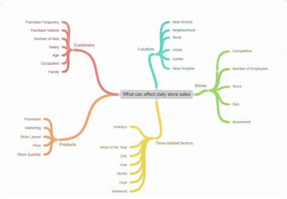2.1.1 Store Hypotheses
I raised hypotheses about stores, suggesting that more employees, higher stock, and larger store size can increase sales, while nearby competitors might decrease them.
2.1.2 Product Hypotheses
The product hypotheses suggest that investments in marketing, greater product exposure, and aggressive promotions should boost sales.
2.1.3 Time Hypotheses
I raised hypotheses related to time, such as higher sales during Christmas, the second half of the year, and after the 10th day of the month, while lower sales tend to occur on weekends and during school holidays.
2.2 Final List of Hypotheses
The final list groups only the hypotheses for which I currently have data. In the future, I could combine data from other hypotheses.
2.3 Feature Engineering
In this session, I performed feature engineering, which is the process of creating and transforming variables to improve the model's performance. Sometimes, models find relationships in the data that, when combined, can effectively explain the phenomenon being studied—in our case, Rossmann store sales. Thus, I created new columns such as year, month, day, and week to capture temporal information. Additionally, I created variables like competition time and promotions to better understand the impact of these factors on sales. The feature engineering step is crucial because it transforms raw data into useful information that helps the model learn and make accurate predictions.
STEP 3: Feature Filtering
Here, I performed feature filtering, removing data that would not be useful or available during the prediction.
3.1 Row Filtering
In the row filtering step, I removed records of closed stores (where open is 0) and days with no sales (where sales is 0). This ensures that the model doesn't use invalid or irrelevant data.
3.2 Column Filtering
In the column filtering step, I excluded the following variables: customers, open, promo_interval, and month_map, as these data will not be available at the time of prediction and are not useful for the model.
3.2.1 Reason for Removing Columns
- customers: It's impossible to know how many customers will be in the store in the future, so it's better to remove it.
- open: Whether the store will be open is something we can already infer, or it's irrelevant for the prediction.
- promo_interval: We don’t know when future promotions will take place, so it doesn't make sense to keep it.
- month_map: I only used this to map the months, so it was just an auxiliary column.
STEP 4: Exploratory Data Analysis (EDA)
EDA is a crucial step in the data analysis process. It involves examining the data visually and statistically to understand patterns, detect anomalies, and test assumptions. The goal is to gain initial insights that will help guide the modeling process.
4.1 - Univariate Analysis
Univariate analysis examines a single variable at a time. It is useful for understanding the distribution and characteristics of each variable in isolation, such as mean, median, and variability.
4.1.1 - Response Variable
Here, I checked the distribution of the response variable (sales) to understand its behavior. This is important to ensure that the variable has an appropriate distribution for the model and to better understand sales patterns. In this case, the graph of the variable shows a highly skewed distribution, with a large concentration of low sales and a few stores presenting very high sales.
Since we are dealing with sales that have a skewed distribution, models like linear regression may need adjustments (such as data transformation) to ensure more accurate predictions. Models like Random Forests or XGBoost can handle this type of data well without heavy transformations, being more robust to this distribution.
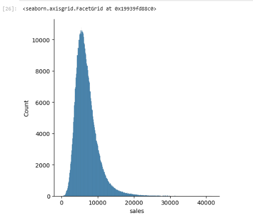4.1.2 - Numerical Variable
Analyzing the distribution of each numerical variable is essential to identify whether there is skewness, outliers, or if the distribution is well-behaved for the model. This helps decide if any transformation is needed for the variables. For example, linear models work well when the distributions of the input variables and errors are close to normality.
4.1.3 - Categorical Variables
I checked the distribution of categorical variables to understand how each category is distributed. This helps identify whether any category has too few data points or if it is relevant for the analysis, and whether we need to adjust the variable or apply encoding.
4.2 - Bivariate Analysis
Bivariate analysis examines the relationship between two variables, which is important for checking correlations and dependencies between independent variables and the response variable. This helps understand how the variables are related and which ones might be relevant for the model.
4.2.1 - Summary of Hypotheses
In the summary of hypotheses, I checked the relevance of the hypotheses raised by classifying them as low, medium, or high impact on the model. These hypotheses are important because they help identify which variables might have the greatest influence on sales, guiding the model development.
4.3 - Multivariate Analysis
Multivariate analysis involves examining multiple variables at once to understand their interactions. This is important to identify more complex patterns and relationships between several variables, as well as helping to select the most important ones for the model.
4.3.1 - Numerical Attributes
I separated the numerical attributes to examine the correlation between them. This helps understand how the numerical variables are related and whether there is any redundancy that could be addressed, for example, by removing highly correlated variables. Redundancy means having one or more variables that essentially "explain" the same thing.
4.3.2 - Categorical Attributes & Cramér's V
I separated the categorical attributes and applied the Cramér's V test, which measures the strength of the association between two categorical variables. This test is important because it helps identify which categorical variables are most associated with the response variable, improving the selection of variables for the model.
Why is EDA Important?
Exploratory Data Analysis (EDA) is crucial for understanding the distribution of variables and how they relate to one another. This step helps us identify the need for normalization or transformation of variables, such as in the case of the sales variable with a skewed distribution. It is common to return to this session during the project when making decisions about encoding, for example.
STEP 5: Data Preparation
Data preparation is a crucial step to ensure that the machine learning model has the data in the correct format. This includes normalization, encoding, and transformation of variables so that the model can interpret and process this information in the best possible way.
Normalization is the process of scaling or transforming data to a specific range or form in order to ensure that all variables or features have the same importance in the model or analysis. This is particularly important when the data have different scales or units, such as height in meters and weight in kilograms.
5.1 – Z-SCORE Normalization
Z-Score normalization is a technique used to normalize variables by transforming the data to have a mean of 0 and a standard deviation of 1.
The formula for Z-Score normalization is given by:
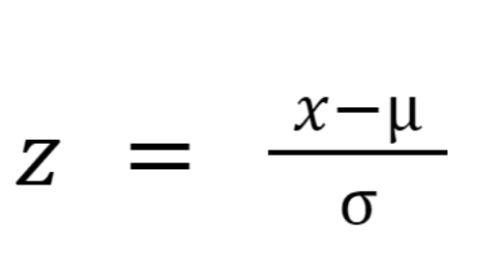Where:
- Z: normalized data
- X: raw data
- μ: mean
- σ: standard deviation
Let’s assume we have the following rental house prices: 570, 680, 1250, 941, 100,000. By applying the Z-Score formula, we can see that the range of the data after normalization lies between a mean of 0 and a standard deviation of 1.
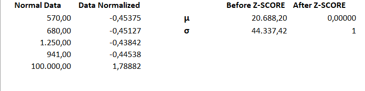This type of normalization works well with variables that have a normal or near-normal distribution. In my case, I will not use it because I don’t have variables with such distributions in my dataset.
5.2 – Rescaling
Normalization Based on Median and IQR (Robust Scaler)
This method does not force the data into a fixed range, but scales them based on the median and interquartile range (IQR). The resulting range can be negative, positive, or zero, depending on the position of the values relative to the median.
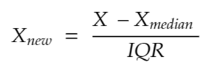Where:
- Xnew: is the normalized value of data X.
- Xmedian: is the median of the X values.
- IQR: is the interquartile range, the difference between the third quartile and the first quartile.
Let’s assume we have house rental values to normalize based on the median and IQR. This method can help reduce the impact of outliers, like the price of 100,000.
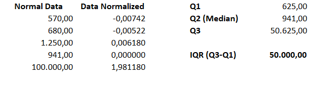Min-Max Scaler
For data that does not have outliers, the Min-Max Scaler was used, and its formula is as follows:
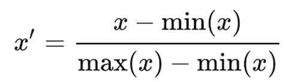Where:
- x′: is the normalized value of a specific data point.
- x: is the original value of a data point.
- Min(x): minimum value in the dataset.
- Max(x): maximum value in the dataset.
This formula transforms all the values of x into a range between 0 and 1, based on the minimum and maximum values of the dataset.
Example: Let’s use the data from earlier:
X = [570, 680, 1250, 941, 100000]
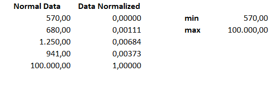5.3.1 – Encoding
Machine learning models can only process numbers, so it is necessary to encode categorical variables. One Hot Encoding and Label Encoding are used to transform these variables into numbers. For example, for the variable state_holiday, which has categories such as public_holiday, easter_holiday, and christmas, One Hot Encoding creates new columns for each category. For store_type, we use Label Encoding, assigning a number to each store type.
Label Encoding assigns arbitrary numbers to categories without implying any order between them. Ordinal Encoding assigns numbers to categories based on an explicit order or hierarchy among them.
5.3.2 - Response Variable Transformation
The logarithmic transformation was applied to the sales variable due to its skewed distribution. Machine learning models generally perform better when variables have a more normal distribution. The logarithmic transformation helps reduce the long tail of the distribution.
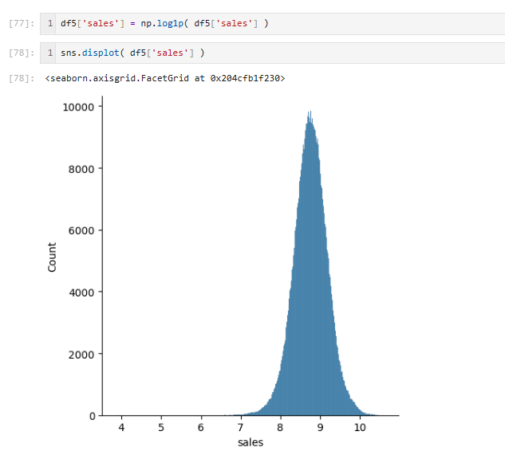5.3.3 - Nature Transformation
Cyclical variables, such as day_of_week, month, and week_of_year, were transformed using trigonometric functions (sine and cosine). This is necessary because these variables have a cyclical nature: the day of the week (e.g., Sunday and Monday) is closer to each other, but without the transformation, the model might treat them as distant. Trigonometric functions help to represent this cyclical continuity.
STEP 6: Feature Selection
Feature selection is a crucial step in the development of machine learning models, as it aims to choose the most important variables or features for making predictions. By removing irrelevant or redundant variables, the model can focus on the most relevant information, which can improve its accuracy and efficiency.
6.1 - Split Dataset into Training and Test Dataset
The idea of splitting the dataset into training and test sets is to ensure the model gets a fair evaluation. The training set is the part of the data used to "teach" the model. That is, the model learns from this data, finds patterns, and adjusts its parameters to make more accurate predictions. The test set, on the other hand, is the part of the data that the model has never seen before and is used to evaluate how it will behave in real-world situations, with data that was not used during the learning phase.
In my case, I chose to use the last six months of sales as test data, as these are recent data that were not present during training.
6.2 - Boruta as Feature Selector
Boruta is a very effective feature selection algorithm that is based on the Random Forest model. It works by creating "shadow" copies of the original variables and comparing them to identify which ones are truly important for predicting the target. The variables with the highest importance in the model are considered relevant, while those with an importance similar to or lower than the shadow versions are discarded. This process helps reduce the number of variables in the model, focusing only on the most significant ones and removing those that do not contribute to the prediction.
6.3 - Manual Feature Selection
After running the Boruta algorithm, I manually selected the most important variables indicated by the algorithm. However, in addition to these, I added some variables based on my analysis during the Exploratory Data Analysis (EDA). For example, variables like sales and date were chosen because, based on my insights from the EDA, they directly influence sales and are crucial for the model.
STEP 07: Machine Learning Modeling
Machine learning (ML) is a field of artificial intelligence that enables systems to learn from data and make predictions without being explicitly programmed. By analyzing large volumes of data, the model can identify patterns and relationships between variables, adjusting to predict future outcomes more accurately. This allows the model to learn from examples, becoming more precise as it is fed more data. The goal is to teach the model how to make predictions or classifications, using data to identify trends, and then apply this knowledge to new data that the model has never seen before.
In this session, I will use some of the most common regression models, such as Lasso, Random Forest Regressor, and XGBoost Regressor. But before that, we need to understand what errors in ML are and what they tell us.
In the process of building the model, the separation between training data and test data is essential. The training set is used to teach the model, meaning it learns from this data, identifying patterns and adjusting as needed. The test set, on the other hand, is used to evaluate the model’s ability to generalize, that is, to make good predictions on data it has never seen before. This ensures that the model doesn't just "memorize" the data but learns in a way that can be applied to new scenarios. In my case, I separated the data so that the last six months of sales were used to test the model, while the rest was used for training. This separation helps to measure the accuracy of the model and its ability to generalize to new data.
Within linear regression models, which are used to predict continuous values, there are some common variations. The simplest model is simple linear regression, which is used when we want to predict a value based on a single independent variable (for example, predicting sales based on just one variable, such as the price of a product). Multiple linear regression, on the other hand, is used when we want to predict a value based on multiple independent variables (such as price, promotions, and number of store visitors, for example). In addition, we also have regularized regression models, like Lasso and Ridge, which help prevent overfitting by adding a penalty to the magnitude of the coefficients, making the model simpler and avoiding excessive adjustments to the training data.
What are Errors in ML?
In machine learning, errors refer to the difference between the values predicted by the model and the actual observed values. These errors are essential to evaluate how the model is performing and how accurate its predictions are. There are different ways to measure these errors, and the most common ones are MAE (Mean Absolute Error), MAPE (Mean Absolute Percentage Error), and RMSE (Root Mean Squared Error).
MAE shows the average error without considering the direction, meaning it indicates how much the model is off on average. MAPE helps understand the error in percentage terms, being useful when dealing with data that can have large value variations. Finally, RMSE is sensitive to large errors, which can be important when we need to give more attention to significant mistakes.
MAE (Mean Absolute Error)
MAE (Mean Absolute Error) calculates the average of the absolute difference between the actual values and the predictions. The formula is as follows:
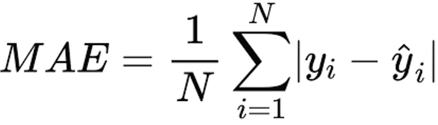Where:
- yi: the actual value
- yî : the predicted value
- N: the number of data points
MAE gives us a measure of how far off, on average, the model’s predictions are from the actual values, without considering whether the errors are positive or negative.
Example: 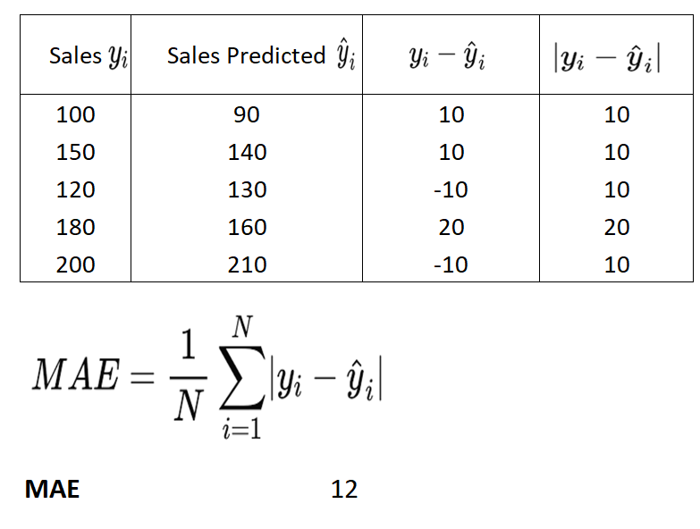
MAPE (Mean Absolute Percentage Error)
MAPE (Mean Absolute Percentage Error) calculates the average of the relative errors (in percentage terms). The formula is as follows:
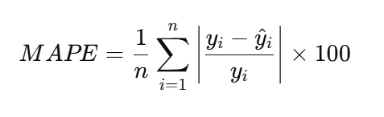Where:
- yi: the actual value
- yî : the predicted value
MAPE provides a measure of how large the errors are in percentage terms, making it useful when dealing with data that can have large variations in value.
Example:
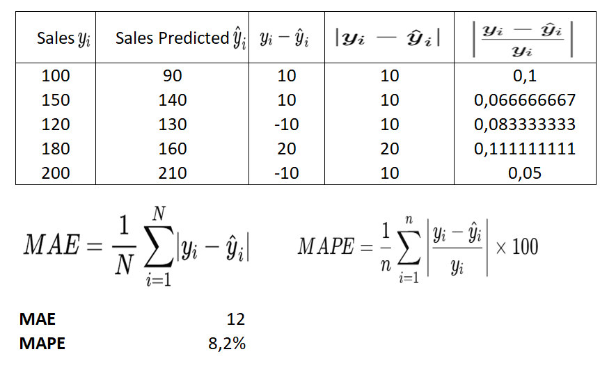RMSE (Root Mean Squared Error)
RMSE (Root Mean Squared Error) measures the average of the squared differences between the actual values and the predictions, which gives more weight to larger errors. The formula is as follows:
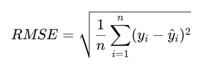Where:
- yi: the actual value
- yî : the predicted value
- n: the number of data points
RMSE is sensitive to large errors, making it important when we need to give more attention to significant mistakes in the model's predictions.
Example:
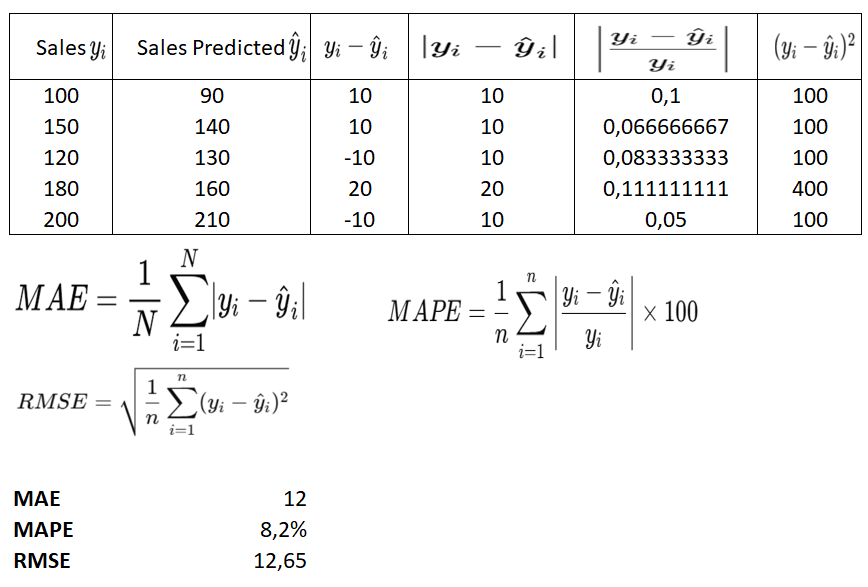MPE (Mean Percentage Error)
MPE (Mean Percentage Error) measures the average percentage error, that is, the average error expressed as a percentage of the actual value. It calculates the difference between the actual and predicted values, then this difference is divided by the actual value and multiplied by 100 to obtain a percentage value. The formula for MPE is:
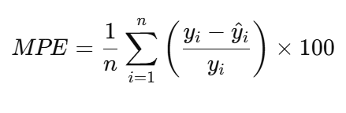Where:
- yi: the actual value
- yî : the predicted value
MPE provides a way to express the error in terms of percentage, making it useful for understanding the error relative to the magnitude of the actual values.
Example:
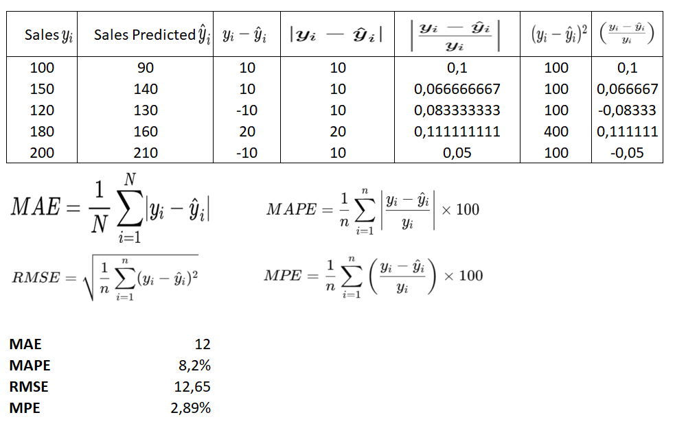Interpretation of errors
MAE (Mean Absolute Error): 12
Interpretation: The value of 12 means that, on average, the sales predictions are off by 12 units from the actual values. This is a relatively simple error to interpret, indicating how far, on average, the model’s predictions are from the real values, without considering whether the errors are large or small specifically.
MAPE (Mean Absolute Percentage Error): 8.2%
Interpretation: The MAPE of 8.2% means that, on average, the sales predictions are off by 8.2% in relation to the actual values. In other words, the model is erring by about 8.2% in its predictions. This value is useful because it expresses the error in relative terms.
RMSE (Root Mean Squared Error): 12.65
Interpretation: The RMSE of 12.65 means that, when considering squared errors, the model has an average error of approximately 12.65 units. Since RMSE is more sensitive to large errors, it may be higher than the MAE if there are large errors in the data.
MPE (Mean Percentage Error): 2.89%
Interpretation: The MPE of 2.89% indicates that, on average, the model overestimates sales by 2.89%. This is important because it shows the direction of the error (whether the model tends to overestimate or underestimate) rather than just showing the magnitude of the error.
Cross-Validation
Cross-validation (CV) is a technique used to validate the performance of a model by splitting the data into different subsets. This helps avoid the model from being overfitted to a single dataset, providing a more accurate assessment of its generalization ability. By performing cross-validation, each part of the dataset is used for both training and testing, allowing the model to be tested more robustly.
7.1 - Mean Model
The mean model is a simple approach that uses the average of a variable’s values to make predictions. It can be useful when there is limited data or when we don’t have enough information to build a more complex model. The model assumes that, on average, the variable we are trying to predict does not vary much.
Example: If the average sales are 5000, the mean model will always predict 5000, regardless of other variables. Although it is simple, this model can serve as a good baseline to evaluate whether more complex models are truly adding value.
It can be used as a starting point/baseline to check if more sophisticated models are offering improvements over a simple average.
7.2 - Linear Regression Model
Linear regression is a technique used to predict a continuous dependent variable based on one or more independent variables. The model tries to fit a straight line to the data in such a way that it minimizes the error between the predictions and actual values.
Example: If the sales depend on the number of customers, linear regression would try to find the equation y = m⋅x + b that best fits the sales data (y) and customer data (x), where m is the slope of the line and b is the y-intercept.
Linear regression is a simple and effective model to relate variables, but it can have limitations when the data exhibit nonlinear behaviors or when outliers distort the regression line.
7.3 - Lasso Model (Regularized Linear Regression)
Lasso (Least Absolute Shrinkage and Selection Operator) is a variation of linear regression that, in addition to fitting the regression line, penalizes larger coefficients, forcing them to zero. This means that Lasso can reduce the impact of less important variables and select the most relevant variables for prediction.
Example: In a model with many variables (such as price, advertisement time, location, etc.), Lasso can reduce the importance of less essential variables, keeping only the most relevant ones for predicting sales.
7.4 - Random Forest Regressor
Random Forest is a supervised learning model based on decision trees. It creates multiple decision trees randomly and makes predictions by averaging the predictions of all the trees. The model is robust because it uses the combination of several trees, helping to reduce the risk of overfitting and increasing the accuracy of predictions.
Example: Instead of relying on a single decision tree to predict sales, Random Forest creates multiple trees, and the final prediction is an average of the predictions from all trees.
7.5 - XGBoost Regressor
XGBoost (Extreme Gradient Boosting) is an optimized version of the Gradient Boosting algorithm. It combines multiple decision trees, iteratively adjusting the model to correct the errors of the previous trees. XGBoost is known for its high performance and is very effective in large data volumes. It is widely used in machine learning competitions due to its precision and speed.
Example: XGBoost creates sequential decision trees, where each new tree tries to correct the errors of the previous tree. This helps improve the model’s performance in prediction tasks, such as predicting sales based on multiple variables.
7.6.2 Single Performance
Single Performance
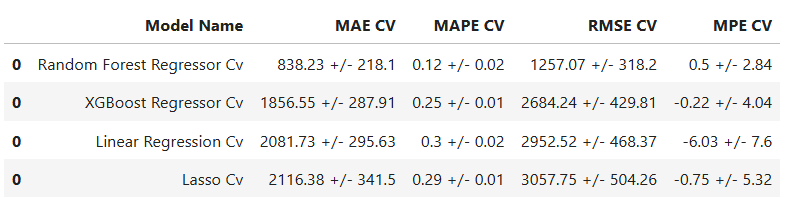In the Single Performance table, we observe that the Mean Model outperformed more complex models such as XGBoost, Lasso, and Linear Regression in several metrics, such as MAE, MAPE, and RMSE. This is interesting because, at first glance, one might expect that more advanced models, like XGBoost or Random Forest, would outperform the simple mean. However, the Mean Model has a relatively low MAE and a very small MAPE, indicating that it is making predictions quite accurately, although in a simple manner. This performance may suggest that the data is relatively stable or that the sales variation is small, allowing a simple forecast like the mean to be competitive. However, it is important to note that the Mean Model has a higher RMSE, which may indicate that it is sensitive to large errors in some observations, but overall, its errors are not drastic enough to affect the percentage forecasts (MAPE).
On the other hand, Random Forest, which is a more complex model, shows a strong overall performance, with a low MAE and an even lower MAPE, making it superior to other models. XGBoost, although powerful, had elevated MAE and RMSE values, which suggests that it may be making larger errors in some predictions, impacting the absolute error metrics. Lasso and Linear Regression also did not perform well, showing higher errors in both absolute and percentage terms. The underestimation of sales is visible in these models (as indicated by the negative MPE), which may have caused their performance to fall short of expectations compared to the Mean Model.
7.6.3 Real Performance (with Cross-Validation)
Real Performance
In Real Performance (with cross-validation), the story changes a bit. Random Forest continues to stand out as the most robust model, with a low MAE and MAPE, as well as a reasonable RMSE. It appears to be well capable of generalizing to new data, which is evidenced by the cross-validation. XGBoost shows mixed results, with a slightly higher MAE than Random Forest but still competitive in percentage terms (MAPE of 0.25%). However, the difference in RMSE between them suggests that Random Forest may be more stable, while XGBoost still makes larger errors. Simpler models like Linear Regression and Lasso continue to show unsatisfactory results, with higher MAEs and RMSEs, indicating that for this dataset, more sophisticated models are better suited.
Summary
In summary, the Mean Model can be a good option when the data is simple and does not have much variation. However, for more robust performance and better generalization, Random Forest proves to be the best choice among the models analyzed. XGBoost is also a valid option, but due to its inconsistent performance, Random Forest stands out as the most balanced and effective model.
STEP 8: Hyperparameter Fine Tuning
Optuna and Random Search are techniques for hyperparameter optimization, but they operate in very different ways and have distinct characteristics. The main difference between them lies in how parameters are explored and adjusted. Random Search is a simple technique where combinations of hyperparameters are randomly selected within a predefined parameter space. The model is trained and evaluated for each chosen combination, and the best parameter set is selected at the end. Random Search is easy to use and does not require complicated implementation. However, it can be inefficient because it does not intelligently explore the parameter space, potentially wasting time and resources by exploring regions where the results are poor. Additionally, since combinations are chosen randomly, the results can vary significantly between runs.
In this session, I will use both Optuna and Random Search for hyperparameter optimization. I will not implement GridSearch, as it requires significant computational power due to the large number of combinations it needs to test. Optuna, on the other hand, is a tool based on Bayesian optimization, which is more efficient than Random Search, as it learns from previous executions and selects more promising parameters. Thus, Optuna is more effective, saving time and resources during the search for the best parameters. However, it requires more setup and has a steeper learning curve. By comparing the two techniques, it will be possible to assess which one offers the best combination of performance and efficiency for my case.